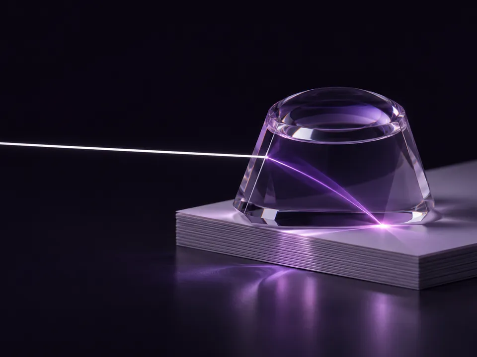
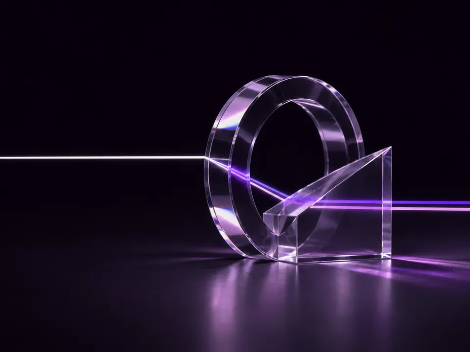
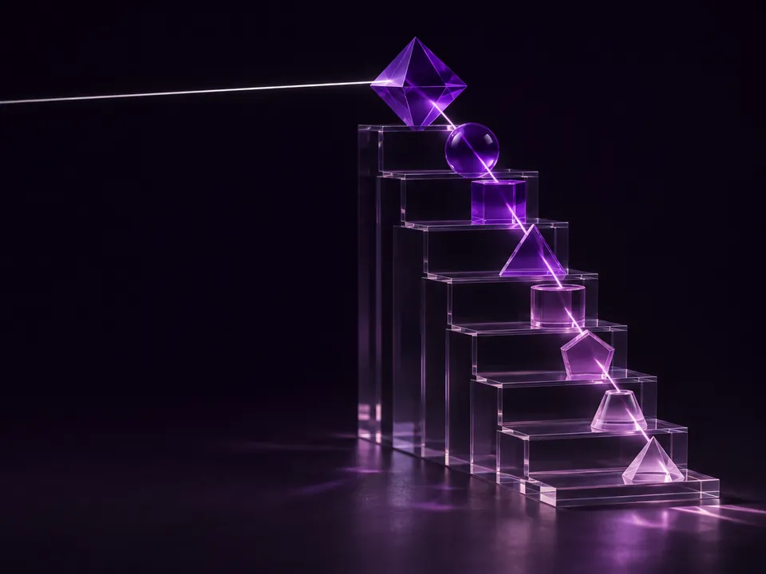
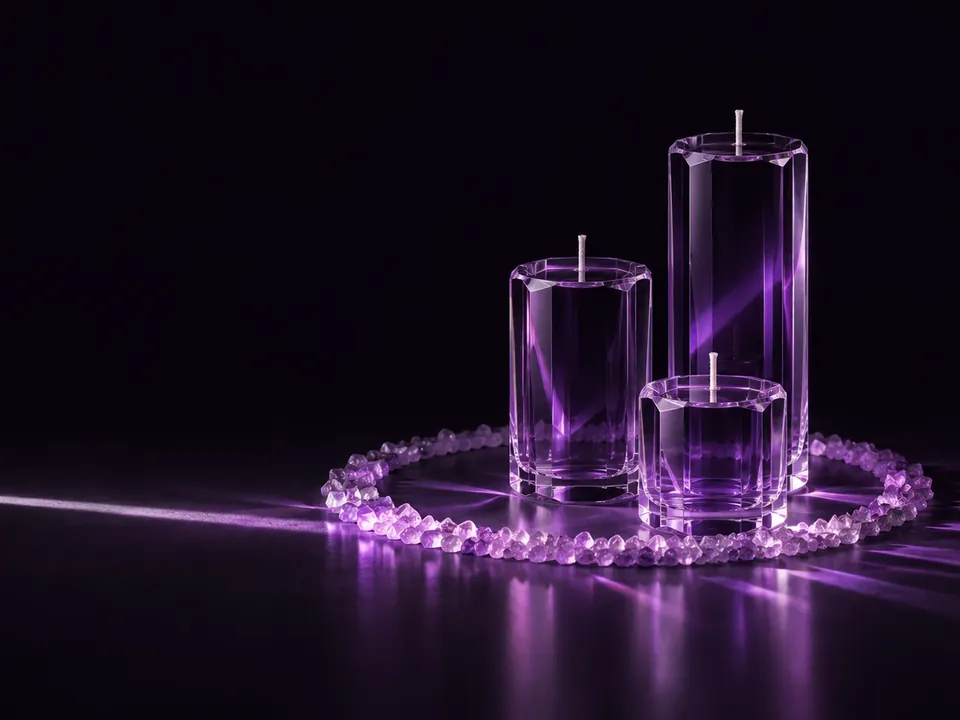
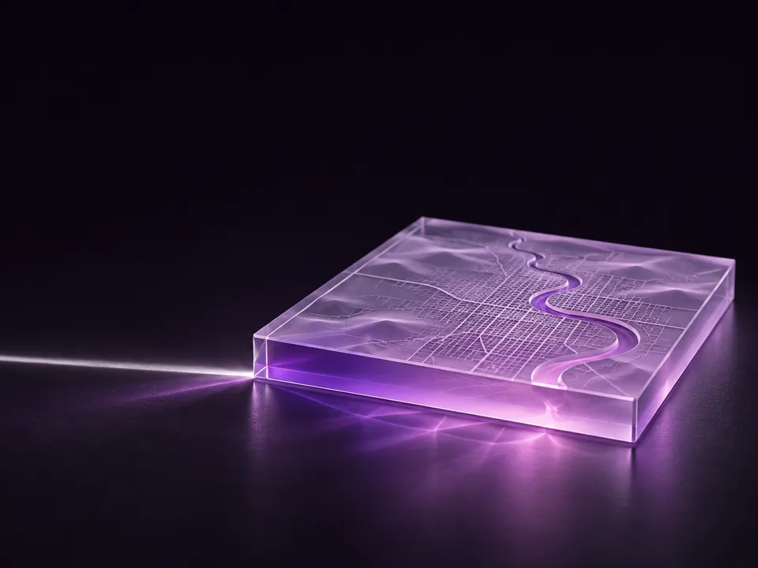
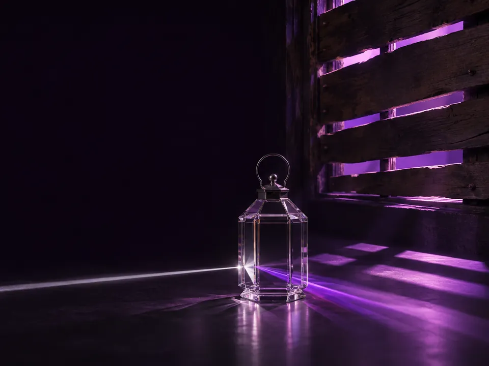
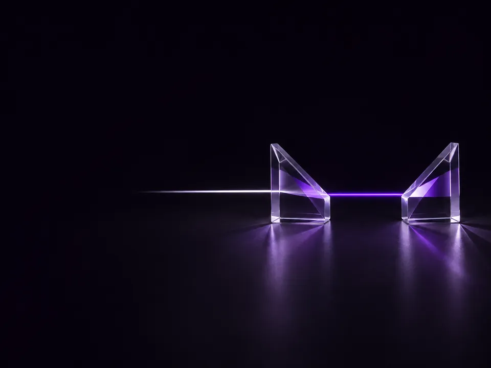
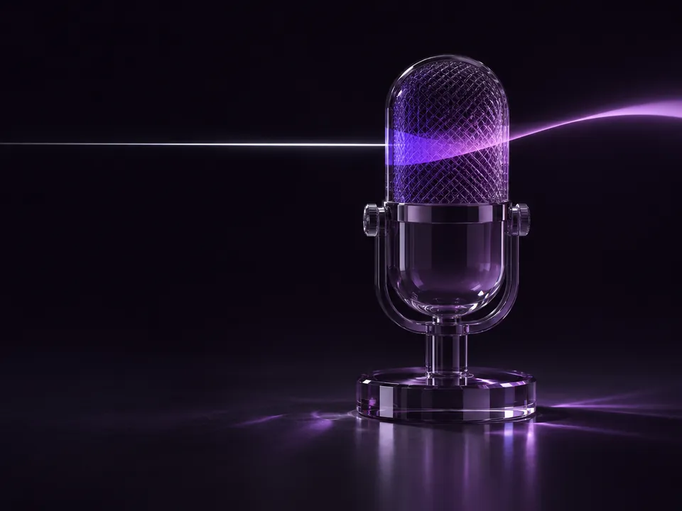
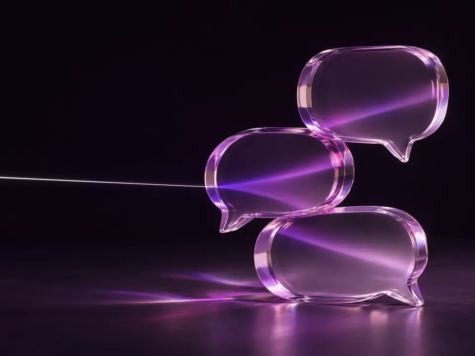
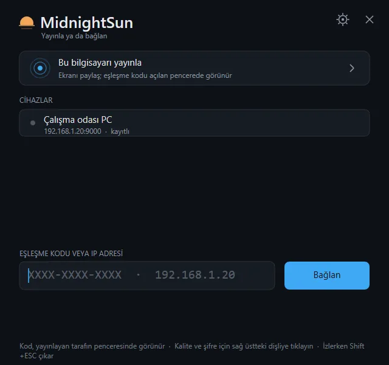

Bir laboratuvar, on yedi çalışma. Hepsi herkese açık.
Araçlar
- VerinodaGeliştirici aracı · 0.5.0 (beta), 25 Ekim 2026Kodlama ajanları için kanıt öncelikli kod zekâsı. Her cevap bir iddia, her iddia bir dosya:satır.

İllüstrasyon - Verinoda SymbiosisClaude Code moduVerinoda ve Claude Code bir arada: indeksi taze tutan, commit'leri inceleyen canlı bir panel.

İllüstrasyon - ps-agentAraştırma ve tasarım deposu · Aşama 1; çalışan ürün yok, indirilecek bir ps-agent eklentisi henüz yokPhotoshop içinde çalışan kişisel yapay zekâ paneli: tasarım belgeleri, tehdit modeli ve Photoshop 28 risk denemeleri. Çalışan ürün yok.
 İllüstrasyon
İllüstrasyon - Claude Skill ArşiviClaude skilleriKendi yaptığımız Claude skilleri ve nasıl yapıldıkları: her biri en son sürümüyle.
 İllüstrasyon
İllüstrasyon - Fable OrchestrationClaude Code skill'i ve paneliPahalı ana modelin yönettiği, işleri rütbeye göre daha ucuz modellere dağıtan bir Claude Code skill'i ve onu düzenleyen panel.

İllüstrasyon
Oyunlar ve modlar
- SupernaturalENGMinecraft modu · Erken Erişim 0.1Supernatural dizisinin 1–5. sezonu, kendi kurallarıyla çalışan bir Minecraft moduna çevrildi.

İllüstrasyon - Kansas-caelesteHaritaLawrence, Kansas, 1 blok = 1 metre. Gerçek yükseklik ve yol verisinden pişirilmiş bir dünya.

İllüstrasyon - Melek Kanatları (AngelRanks)Minecraft eklentisi ve modeller · Hobi prototipi; 3D kanat tasarımının mod olarak kullanımı iptal edildi, modeller arşiv/prototipMinecraft için animasyonlu 3D melek kanatları: AngelRanks Paper eklentisi, kaynak paketi ve Blockbench kanat prototipleri.
 Gerçek ekran görüntüsü
Gerçek ekran görüntüsü - Melek Kanatları 3D3B model ve görüntüleyici · Hayran yapımı, resmî olmayan; .bbmodel dosyası Blockbench'te açılıp test edilmediSupernatural'dan esinlenen, animasyonlu melek kanadı modeli (Blockbench .bbmodel) ve tarayıcıda 3B görüntüleyici. Hayran yapımı.
 Gerçek ekran görüntüsü
Gerçek ekran görüntüsü - Zombie Survival (Roblox)Roblox oyunu · Prototip aşamasında; yayımlanmış bir Roblox oyun sayfası yok7 Days to Die'dan esinlenen, Roblox için co-op zombi hayatta kalma prototipi; Roblox Studio'da açılan bir .rbxl dosyası olarak dağıtılır.

İllüstrasyon
Uygulamalar
- DersTakipCOMasaüstü uygulamasıÖzel ders veren öğretmenler için internetsiz ders, öğrenci ve kazanç takibi.
 İllüstrasyon
İllüstrasyon - WebcordWeb uygulamasıHesapsız sesli ve yazılı sohbet. Takma ad ve oda kodu yeter; ses tarayıcılar arasında akar.

İllüstrasyon - Mikrofon KöprüsüWeb uygulamasıTelefon ya da bilgisayar mikrofonunu Bluetooth hoparlöre canlı aktarır.

İllüstrasyon - Talk BuddyMobil uygulama · Beta 0.9.0; tanı aracı değildir, uzman değerlendirmesinin yerini tutmazKonuşma ve dil gelişiminde desteğe ihtiyaç duyan çocuklar için sesli, cezasız, oyunlaştırılmış öğrenme uygulaması.

İllüstrasyon - MidnightSunWindows masaüstü uygulaması · Sürüm 1.0.0; iki bilgisayar arasında uçtan uca yayın README'ye göre ayrıca test edilmediWindows için düşük gecikmeli oyun yayını: NVENC, özel UDP protokolü (GSMR), Opus ses, klavye, fare ve oyun kolu geri kanalı.

Gerçek ekran görüntüsü - EBA Biyoloji HaritasıWeb uygulaması · Bağımsız eğitim aracı, MEB/EBA ile bağlantısı yok; konu yapısı elle hazırlandı, hata içerebilir9–12. sınıf konularını etkileşimli bir sinir ağı olarak gösteren web uygulaması; konu ilişkileri, MEB örnek yazılıları ve kaynak bağlantıları.
 Gerçek ekran görüntüsü
Gerçek ekran görüntüsü - Video İndirici ve Format DönüştürücüMasaüstü uygulaması · Sürüm 1.4.0Dört sekmeli masaüstü uygulaması: video ve ses indirir, dosya biçimi dönüştürür, yarım kalmış kayıtları onarır, mikrofon sesini öne çıkarır.
 İllüstrasyon
İllüstrasyon
Konuşalım.
Ekipler, iş ortaklıkları, basın ve araştırma için: ne geliştirdiğinizi ve takıldığınız yeri anlatın. Her mesajı okuyoruz.